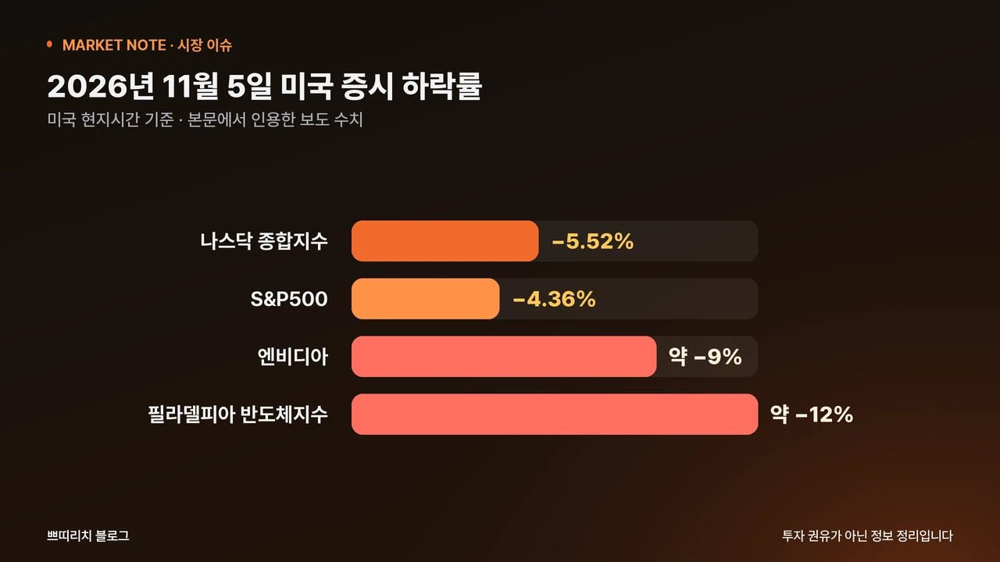
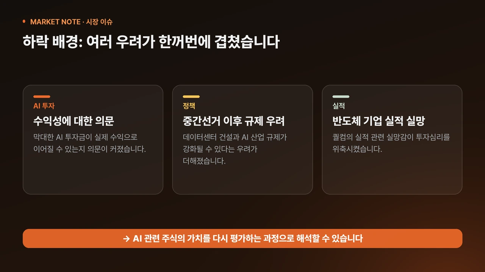
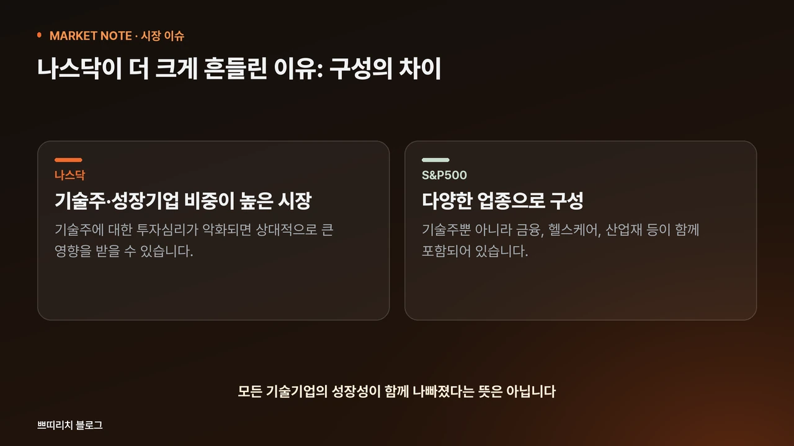
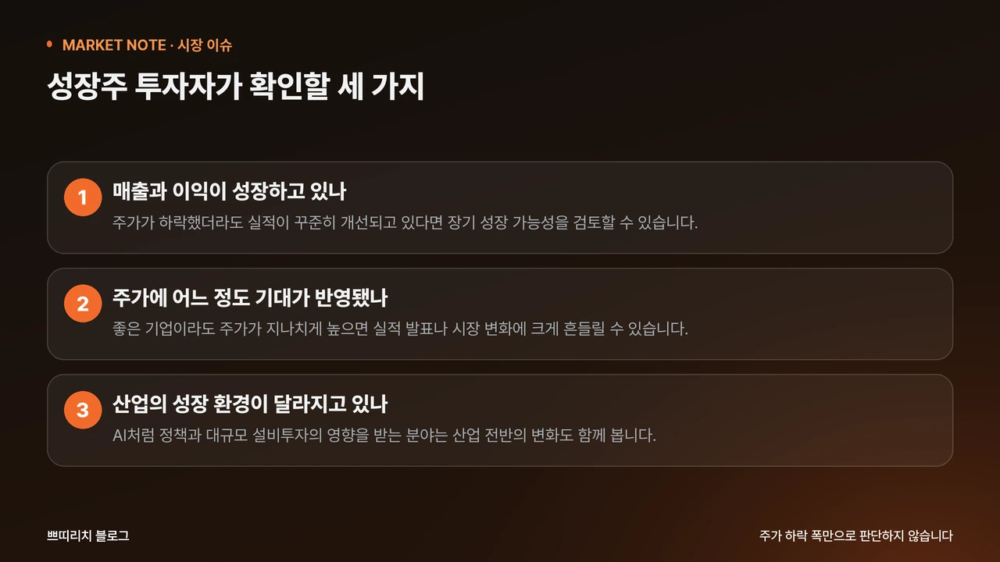

2026년 11월 6일 기준 미국 주식 시장이 크게 흔들리고 있습니다. 미국 현지시간 11월 5일 나스닥 종합지수는 5.52%, S&P500은 4.36% 하락했습니다.
특히 엔비디아를 비롯한 반도체와 인공지능(AI) 관련 기업들의 하락 폭이 컸는데요. 미국 주식이 하락한 이유는 무엇이고 앞으로 미국 주식 전망은 어떻게 봐야 할까요? 이번 하락의 배경과 성장주 투자자가 확인해야 할 사항을 정리했습니다.

미국 주식이 하락한 이유는 무엇일까요?
이번 미국 주식 하락의 중심에는 AI 산업에 대한 우려가 있습니다. 그동안 미국 증시는 인공지능 산업의 성장 기대를 바탕으로 상승해 왔습니다. 엔비디아와 같은 반도체 기업뿐 아니라 데이터센터, 서버, 전력 인프라 관련 기업에도 투자자들의 관심이 집중됐는데요.
하지만 최근에는 AI 산업에 투입되는 막대한 투자금이 실제 수익으로 이어질 수 있는지에 대한 의문이 커지고 있습니다. 여기에 미국 중간선거 이후 데이터센터 건설과 AI 산업 규제가 강화될 수 있다는 우려까지 더해졌습니다. 반도체 기업 퀄컴의 실적 관련 실망감도 투자심리를 위축시킨 요인으로 꼽힙니다.
결국 이번 하락은 여러 악재가 겹치면서 투자자들이 AI 관련 주식의 가치를 재평가한 결과로 해석할 수 있습니다.

나스닥은 왜 더 크게 떨어졌을까요?
나스닥은 기술주와 성장기업의 비중이 높은 시장입니다. 반면 S&P500은 기술주뿐 아니라 금융, 헬스케어, 산업재 등 다양한 업종으로 구성돼 있습니다. 따라서 기술주에 대한 투자심리가 악화되면 나스닥이 상대적으로 큰 영향을 받을 수 있습니다.
실제로 11월 5일 엔비디아 주가는 약 9% 하락했고 필라델피아 반도체지수는 약 12% 급락했습니다. AI 산업의 성장 기대가 주가에 많이 반영됐던 기업일수록 향후 실적에 대한 불확실성에 민감하게 반응할 수 있습니다.
다만 나스닥이 크게 하락했다고 해서 모든 기술기업의 성장성이 동시에 나빠졌다는 의미는 아닙니다. 기업별 실적과 주가 수준을 구분해서 살펴볼 필요가 있습니다.

미국 중간선거가 주식시장에 미친 영향은?
2026년 11월 3일 미국 중간선거가 치러졌습니다. 선거 이후 민주당이 의회 주도권을 확보하면서 AI 데이터센터 확장과 관련한 정책 변화 가능성이 주목받고 있습니다. 특히 일부 지역에서는 데이터센터 건설에 대한 주민 반대와 규제 강화 움직임이 나타났습니다.
데이터센터 건설이 지연되면 반도체와 서버, 전력 설비 등에 대한 수요 증가 속도에도 영향을 줄 수 있습니다. 다만 선거 결과가 곧바로 기업 실적 악화로 이어지는 것은 아닙니다. 실제 정책이 어떻게 구체화되는지, 기업들의 투자 계획이 달라지는지를 확인해야 합니다.
따라서 미국 중간선거 자체보다 선거 이후의 산업 정책 변화가 주식시장에 어떤 영향을 주는지가 중요합니다.
미국 성장주 투자자는 무엇을 확인해야 할까요?
미국 성장주에 투자하고 있다면 주가 하락 폭만 확인하기보다 다음 세 가지를 살펴볼 필요가 있습니다.
첫째, 기업의 매출과 이익이 성장하고 있는가?
주가가 하락했더라도 기업의 실적이 꾸준히 개선되고 있다면 장기적인 성장 가능성을 검토할 수 있습니다.
둘째, 현재 주가에 어느 정도의 성장 기대가 반영돼 있는가?
좋은 기업이라도 주가가 지나치게 높다면 실적 발표나 시장 환경 변화에 크게 흔들릴 수 있습니다.
셋째, 산업의 성장 환경이 달라지고 있는가?
AI 산업처럼 정책과 대규모 설비투자의 영향을 받는 분야는 기업 실적뿐 아니라 산업 전반의 변화를 함께 살펴야 합니다.
특히 미국 성장주에 처음 투자한다면 유명한 기업이라는 이유만으로 매수하기보다 기업의 수익 구조와 위험 요인을 이해하는 것이 중요합니다.

미국 주식 전망, 지금 매수해도 괜찮을까요?
이번 나스닥 급락을 매수 기회로 생각하는 투자자도 있을 것입니다. 하지만 주가가 크게 떨어졌다는 이유만으로 저평가됐다고 판단하기는 어렵습니다. 향후 미국 주식 전망을 판단하려면 다음 요소를 함께 살펴봐야 합니다.
- AI 관련 기업들의 실적
- 데이터센터 투자 계획
- 미국 금리와 경제지표
기업 실적이 유지되고 정책 불확실성이 완화된다면 시장이 안정을 되찾을 가능성이 있습니다. 반대로 AI 투자 축소나 실적 전망 하향이 이어진다면 추가 하락 가능성도 배제할 수 없습니다.
지금은 주가가 얼마나 떨어졌는지보다 기업의 성장 가능성과 현재 가격이 적절한지를 확인하는 과정이 필요합니다.
정리하자면
이번 미국 주식 하락은 AI 산업의 성장 기대와 실제 수익성에 대한 시장의 평가가 달라질 수 있다는 점을 보여줍니다.
미국 주식을 처음 시작하거나 성장주 투자를 고민하고 있다면 단기적인 주가 움직임만 따라가기보다 기업을 분석하는 기준부터 마련하는 것이 중요합니다.
본문의 시장 수치는 2026년 11월 5일(미국 현지시간) 마감 기준으로 보도된 내용을 정리한 것입니다. 시점에 따라 수치가 달라질 수 있으니 투자 판단 전에 거래소와 이용 중인 증권사의 공식 자료로 다시 확인하세요. 특정 종목의 매수·매도를 권유하지 않습니다.
읽은 내용을, 강의의 설명과 연결해 보세요.
미국 성장주를 어떤 기준으로 살펴봐야 할지 궁금하다면 아래에서 관련 학습 내용을 확인해 보세요.
무료 공개는 1강에 해당하며 전체 강의는 유료입니다. 무료 1강은 공식 강의실에서 확인할 수 있습니다. 수강 조건은 공식 상품 페이지에서 확인해 주세요.